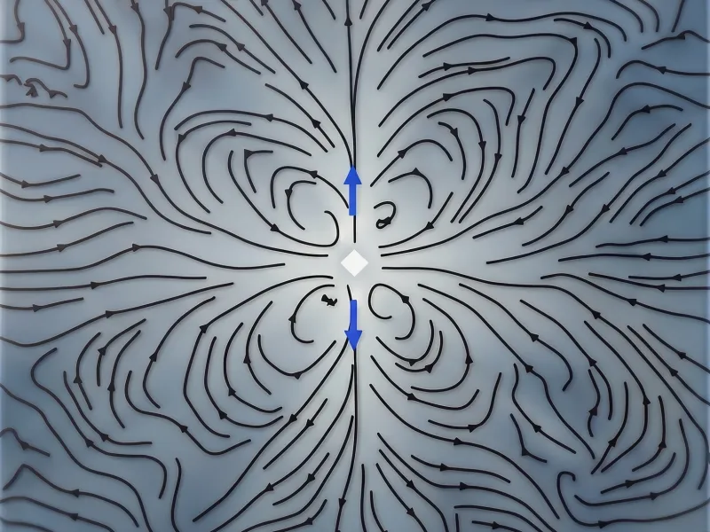
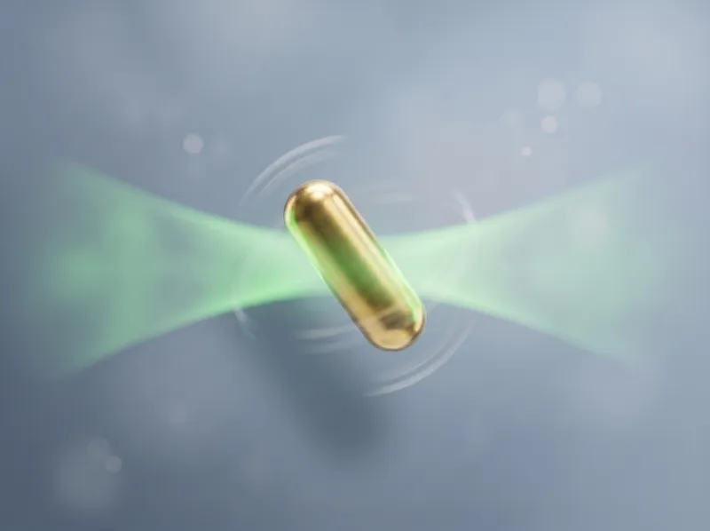
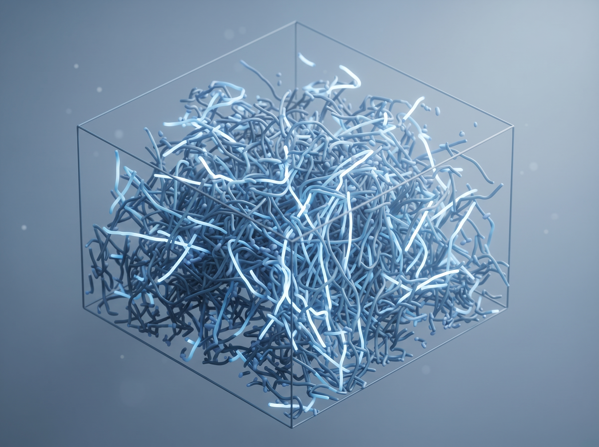
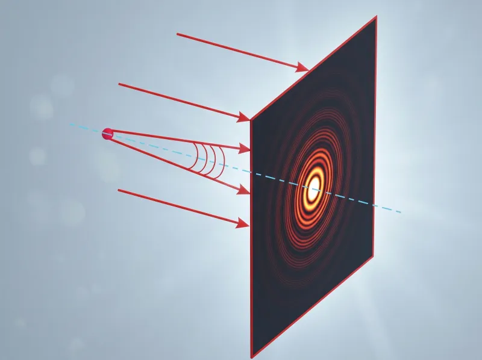
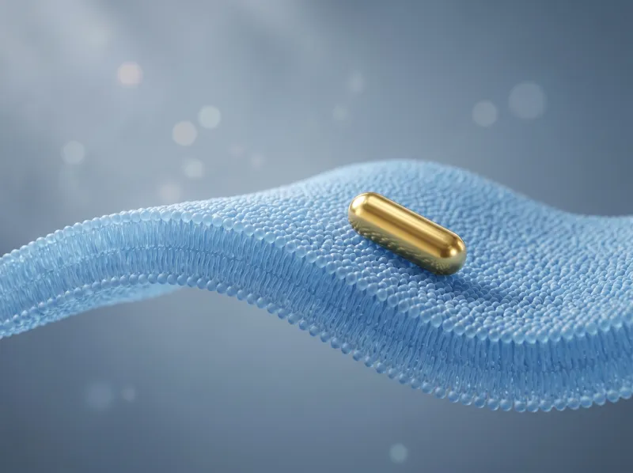
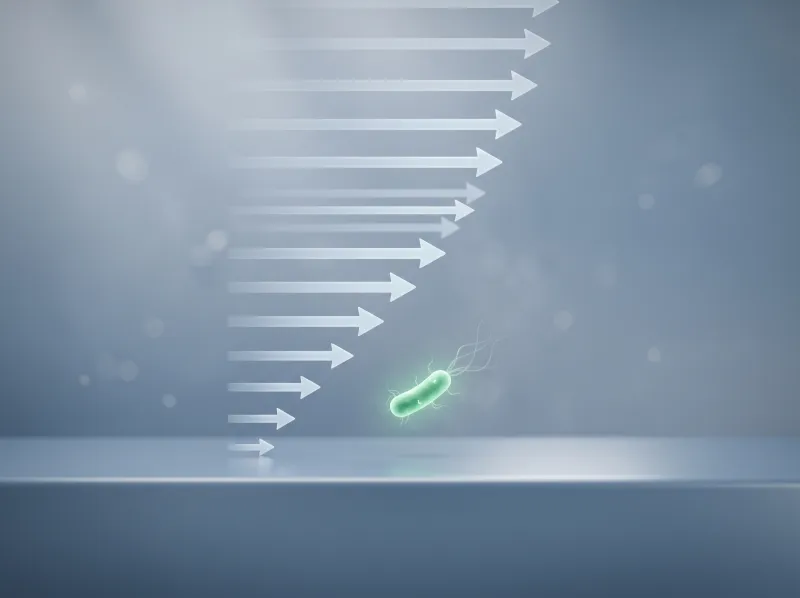
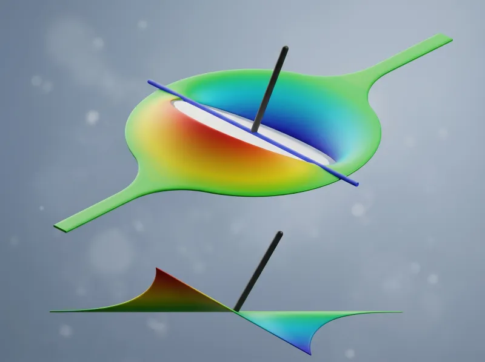

Projects
We developed the computational analysis platform for Countable PCR, a massively parallel single-molecule digital PCR system. The platform converts multichannel light-sheet 3D imaging into calibrated molecular counts, enabling precision multiplexing across 10+ targets simultaneously.

We developed a domain-general spatiotemporal correlation framework for tensor fields in stochastic active systems. By recasting correlation analysis as an ensemble-averaged material response function, we enabled robust inference of mechanical properties from actomyosin networks in model systems and living cells.

We developed correlated displacement velocimetry (CDV), a correlation-based statistical estimator built on particle tracking that reconstructs nanoscale interfacial velocity fields. Applied to thermally driven colloidal probes at fluid interfaces, CDV revealed vortex-like hydrodynamic structures.

Using polarization-resolved dark-field microscopy, we tracked single gold nanorods to measure both translational and rotational diffusion simultaneously. We extracted nanoscale viscoelastic properties and anisotropic diffusion tensors in complex fluids, including polymer solutions and living cells.

Using inline digital holographic microscopy, we showed that E. coli swimming near a solid surface are hydrodynamically trapped — the surface suppresses the tumbling that normally reorients the cell, causing extended near-surface runs. This work explained a longstanding puzzle in bacterial locomotion.

We built an inline digital holographic microscopy platform and developed a correlation-based denoising algorithm for 3D tracking of bacteria in dense suspensions. The method enabled nanometer-precision localization and full 3D trajectory reconstruction without fluorescent labels.

We developed a polarization-resolved dark-field optical metrology system for tracking single gold nanorods with sub-degree angular precision on lipid membranes. By combining physics-informed forward models with correlated orientation fluctuations, we extracted quantitative bending moduli from model and cellular membranes.

As a counterpart to the "Failed Escape" work, we showed that ambient shear flow rescues E. coli from surface entrapment by restoring tumbling near solid boundaries. This provided a mechanistic explanation for how bacteria escape surfaces in flow environments.

We designed and built a microscope-stage Langmuir trough using 3D printing, enabling simultaneous interfacial tensiometry and microrheology. The device measured interfacial viscosity over an 8-order-of-magnitude dynamic range, opening access to previously intractable soft interface systems.